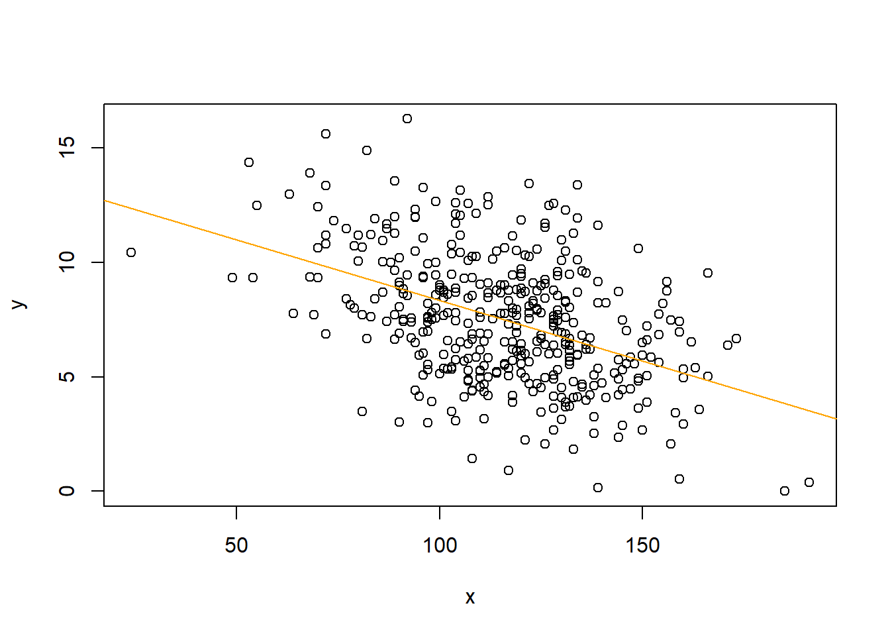

## The Boston data-set is a well-known collection of data that contains information about different aspects of residential homes in Boston, Massachusetts. The data-set was created by Harrison and Rubinfeld in the 1970s and has since been used extensively in the field of machine learning and statistics as a benchmark data-set for regression tasks.
Sales CompPrice Income Advertising
Min. : 0.000 Min. : 77 Min. : 21.00 Min. : 0.000
1st Qu.: 5.390 1st Qu.:115 1st Qu.: 42.75 1st Qu.: 0.000
Median : 7.490 Median :125 Median : 69.00 Median : 5.000
Mean : 7.496 Mean :125 Mean : 68.66 Mean : 6.635
3rd Qu.: 9.320 3rd Qu.:135 3rd Qu.: 91.00 3rd Qu.:12.000
Max. :16.270 Max. :175 Max. :120.00 Max. :29.000
Population Price ShelveLoc Age Education
Min. : 10.0 Min. : 24.0 Bad : 96 Min. :25.00 Min. :10.0
1st Qu.:139.0 1st Qu.:100.0 Good : 85 1st Qu.:39.75 1st Qu.:12.0
Median :272.0 Median :117.0 Medium:219 Median :54.50 Median :14.0
Mean :264.8 Mean :115.8 Mean :53.32 Mean :13.9
3rd Qu.:398.5 3rd Qu.:131.0 3rd Qu.:66.00 3rd Qu.:16.0
Max. :509.0 Max. :191.0 Max. :80.00 Max. :18.0
Urban US
No :118 No :142
Yes:282 Yes:258
fit1=lm(Sales~.+Income:Advertising+Age:Price,Carseats) # add two interaction termssummary(fit1)
The following objects are masked from Carseats (pos = 3):
Advertising, Age, CompPrice, Education, Income, Population, Price,
Sales, ShelveLoc, Urban, US
regplot(Price,Sales)

Allow extra room for additional arguments/specifications
## Interaction term needs to be included if it makes sense conceptually ( the effect of one independent variable on DV is likely dependent on the effect of another independent variable). As for interpreting the interaction term, if it is insignificant, we may remove it from the model. We only interpret the interaction term, not the independent variables used to create it, because the relative importance of individual predictors is difficult to understand if interaction effects are significant because it implies uncertainty about the relative importance of main effects
Read: Brambor, T., Clark, W.R. and Golder, M., 2006. Understanding interaction models: Improving empirical analyses. Political analysis, 14(1), pp.63-82.
What are qualitative variables? What class should they be?
## Qualitative variables are variables that are not numerical.They belong to a nonnumerical or categorical class.